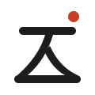

BRAND GUIDE
ロゴガイド
人生工房のシンボルマークとネームロゴの考え方、種類、色、使い方のルールをまとめています。ロゴを使うときは、このページのルールに沿ってください。
ロゴに込めた意味

- 「工」と「人」をひとつに
- 「工」の縦の線を「人」に置きかえました。人（人生）が工房の屋根を支え、土台の上に立つ姿で、「人生を、自分の手でつくる場所」を表しています。
- 筆の払い
- 「人」の左払い・右払いに筆の抑揚を残し、日本の手仕事のあたたかさを込めました。
- 朱の丸
- 作品に押す落款（らっかん）の朱と、「地上の太陽」と呼ばれるフュージョンエネルギーをはじめとする、未来の研究の象徴です。
- ネームロゴ
- 明朝体（Shippori Mincho）を図形化し、文字の形の端どうしの距離をそろえて、均一な字間に整えました。ローマ字は、漢字とまったく同じ幅になるよう字間を計算しています。
ロゴの種類


ブランドカラー
墨
ロゴの基本色・文字
#1D1D1Fロゴの基本色・文字
朱
朱の丸・強調（白地で5.2:1）
#C33E25朱の丸・強調（白地で5.2:1）
朱（明）
暗い背景での朱の丸
#E0715C暗い背景での朱の丸
和紙
背景
#F2F2F0背景
使い方のルール
余白
周りの余白
ロゴの周りには、シンボルの高さの4分の1以上の余白を空け、ほかの文字や図形を置かないでください。
- 最小サイズ：シンボル単体
画面では16px、印刷では5mm以上。
- 最小サイズ：ローマ字付きのロゴ
ネームロゴの漢字の高さが40px（印刷では10mm）以上のときだけ使います。それより小さい場所では、ローマ字のない「シンボル＋人生工房」を使います。
- 背景
明るい背景には墨のロゴ、暗い背景や写真の上には白抜きのロゴを使います。
- 書体
見出しは Shippori Mincho、本文は Noto Sans JP を使います。
やってはいけないこと
書体のライセンス
ネームロゴの字形は、SIL Open Font License 1.1 で公開されている書体「Shippori Mincho」をもとに作成しています。このライセンスでは、字形を図形化してロゴに使うことが認められています。